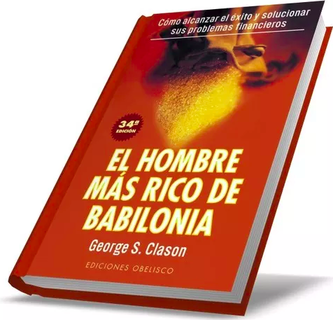

El hombre mas rico de Babilonia
En este artículo vas a encontrar un resumen del libro «El hombre más rico de Babilonia» de George S. Clason, uno de los primeros libros (es de 1926) en materia de educación financiera. Recomendamos encarecidamente su lectura puesto que da unos consejos muy inteligentes en materia de educación financiera y, sin embargo, es muy ameno y nada extenso.
Resumen
El hombre más rico de Babilonia» es una fábula que ilustra los motivos del éxito de la antigua Babilonia, una de las ciudades más ricas del mundo en aquel entonces. Era una versión simplificada de la economía actual pues por aquel entonces ya se utilizaba el dinero para los intercambios e incluso existían los préstamos.

Puntos de vista
En resumen, "El hombre más rico de Babilonia" es un libro que ofrece enseñanzas valiosas sobre el ahorro, la inversión, la planificación financiera y la gestión del dinero para ayudar a las personas a alcanzar la independencia financiera.
Lo mas importante
El libro "El Hombre más rico de Babilonia" es una obra de ficción escrita por George S. Clason que presenta enseñanzas financieras en formato de historias y parábolas. El libro narra las historias de personajes en la antigua ciudad de Babilonia, que buscan alcanzar la riqueza y la independencia financiera. El libro enfatiza la importancia del ahorro y la inversión para acumular riqueza, el valor del trabajo duro y la perseverancia.

Pensamiento Final
Este libro nos deja enseñanzas que podemos aplicar por el camino de la vida, llegando a traer beneficios que nunca pensamos tener
Enseñanza
El libro enfatiza que el éxito financiero no se trata solo de tener buena suerte, sino de tomar acción y aprovechar las oportunidades que se presentan. Las personas que están dispuestas a trabajar duro, tomar riesgos calculados y actuar de manera proactiva tienen más posibilidades de alcanzar el éxito y la riqueza.